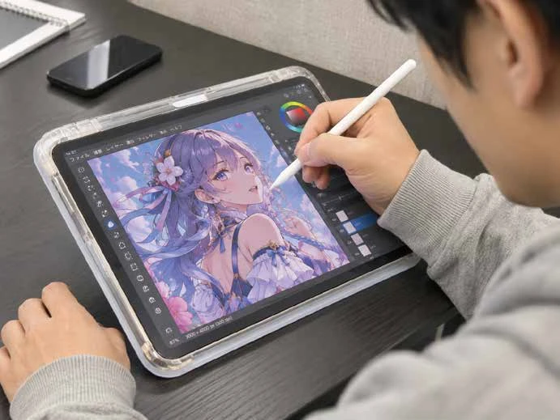
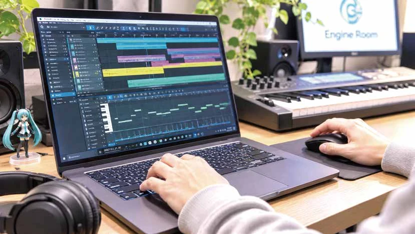
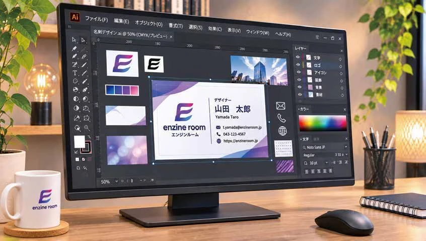
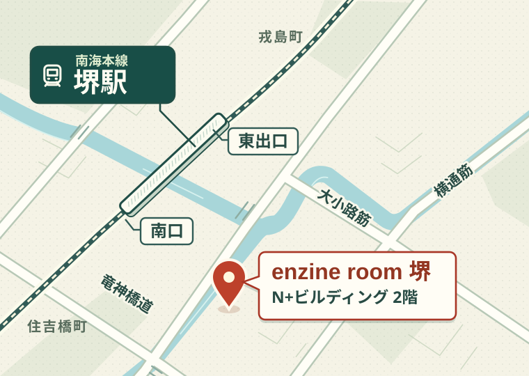

絵とデザイン
- イラスト
- ペンで線を引き、色を重ねてオリジナルのキャラクターを描きます。
- デザイン
- 文字や図形、写真を組み合わせて、名刺やチラシを作ります。
大阪府堺市堺区・甲斐町西
南海本線 堺駅からの道順キャラクターを描く。声を吹き込む。音や映像をつなぐ。堺では、興味のある活動を選び、自分のペースで制作に取り組めます。手作業が好きな方には、シール貼りや封入などの軽作業もあります。
キャラクターを描きたい。
曲に声を入れてみたい。
手を動かす仕事が好き。



電話かLINEで「堺の見学希望」と、ご都合のよい日時をお知らせください。
作業の様子や通う道のりを確かめて、気になることをスタッフに聞けます。
通う日数や利用に必要な手続きについて、スタッフと相談します。
10時〜15時のサービス提供時間の中で、通う日数や時間は個別に相談できます。土曜・日曜は定休日です。
見学時に工賃の対象になる作業や算定方法、利用にかかる費用についてお尋ねください。
食事の提供と、上限のある交通費支給制度があります。費用や対象条件は見学時にご相談ください。
はい。電話またはLINEで、堺の事業所について知りたいことをお伝えください。
南海本線・堺駅の南口から、甲斐町西のN+ビルディングへ向かいます。

図の中を左右にスクロールできます。
「堺の見学希望」と、ご都合のよい日時をお知らせください。やってみたい仕事が決まっていなくても、ご相談いただけます。